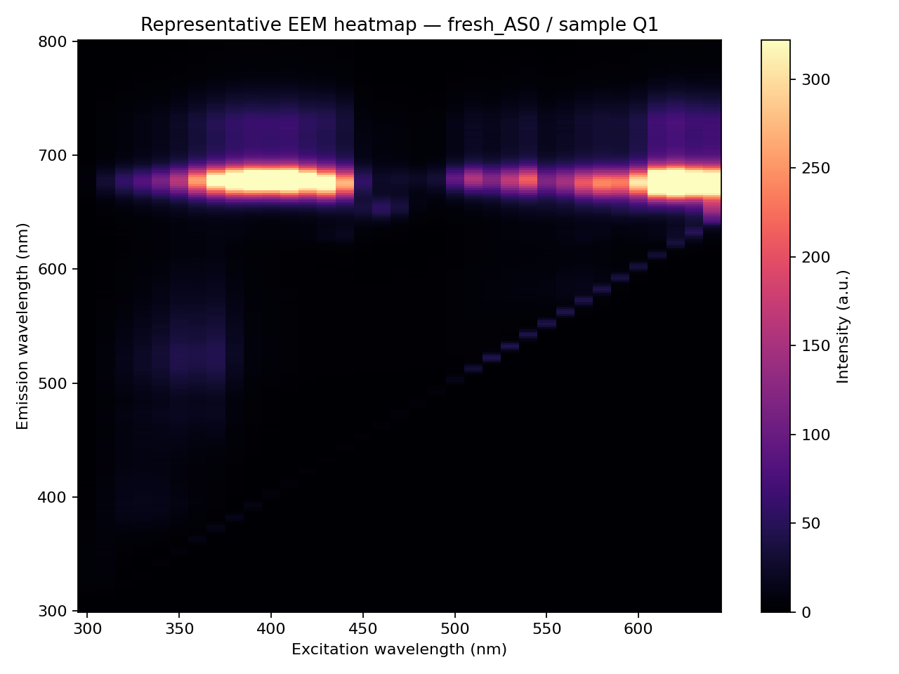
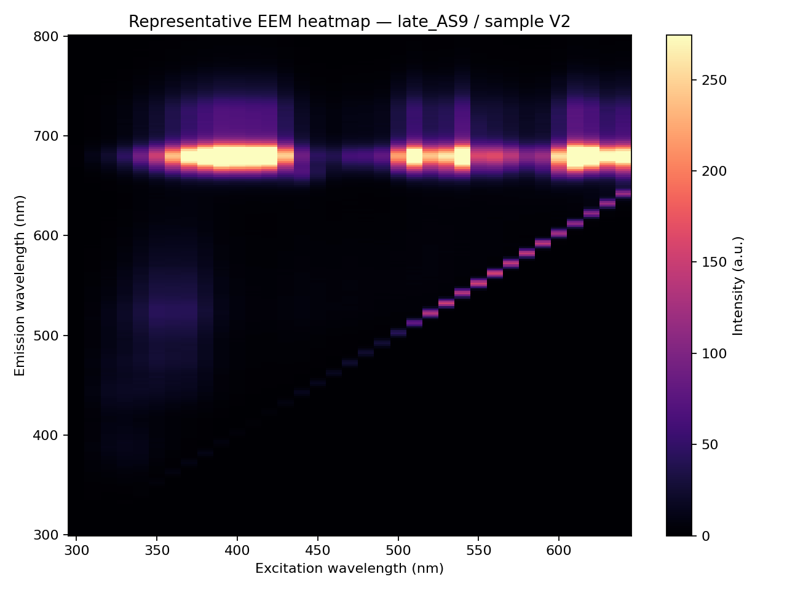
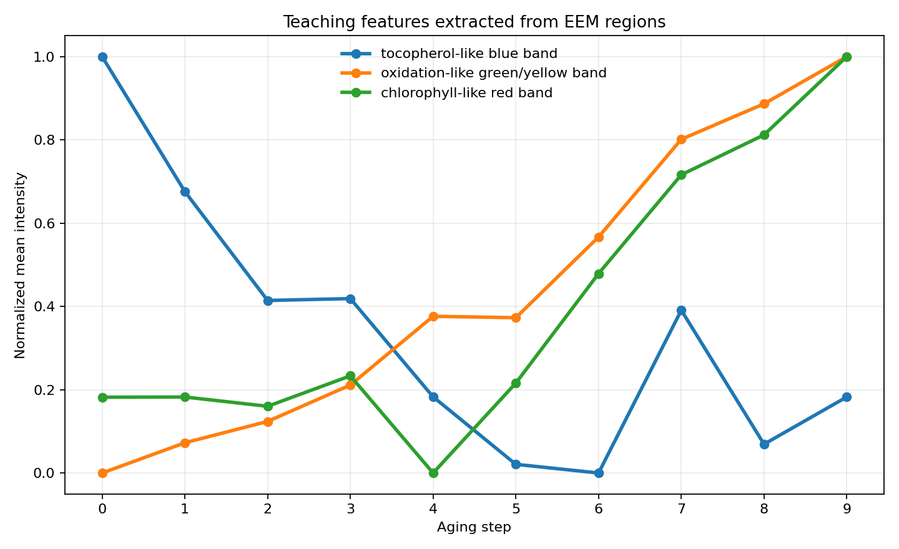
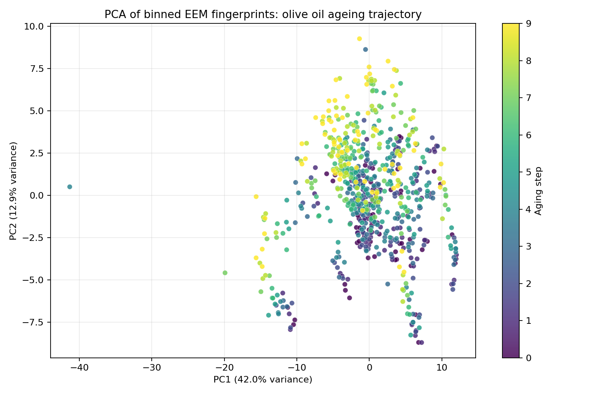
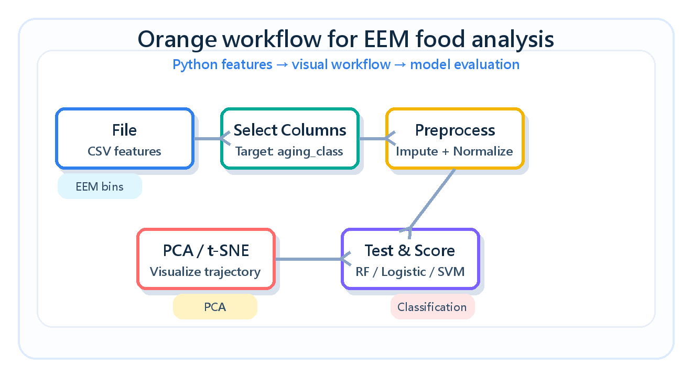

FOOD FLUORESCENCE · OPEN DATA
01
用公開 EEM 資料教食品螢光分析
Teaching fluorescence data analysis for food applications
- 公開資料集：橄欖油老化 fluorescence EEM + UV spectroscopy
- 學習主軸：EEM 熱圖、特徵萃取、PCA、Orange 視覺化建模
- 課程定位：食品化學 / 食品品質分析研究生示範

Bright PCA/PLS visual style · actual dataset: fluorescence EEM olive oil ageing · DOI 10.17632/g6y69g8gwm.1
DATASET
02
為什麼選這個 open dataset？
Dataset choice and teaching value
- Mendeley Data，DOI 10.17632/g6y69g8gwm.1，CC BY 4.0
- 24 款市售 EVOO，10 個加速老化階段，適合做品質變化示範
- 原始檔有真實 vendor CSV 結構，可教資料清理與重塑

Bright PCA/PLS visual style · actual dataset: fluorescence EEM olive oil ageing · DOI 10.17632/g6y69g8gwm.1
EEM CONCEPT
03
EEM 不是一條光譜，而是一張地圖
Excitation–Emission Matrix as a fluorescence fingerprint
- X 軸：Excitation wavelength；Y 軸：Emission wavelength
- 亮區代表樣品中多種螢光物質的綜合訊號
- 食品應用：油脂氧化、色素、抗氧化物與品質差異
Bright PCA/PLS visual style · actual dataset: fluorescence EEM olive oil ageing · DOI 10.17632/g6y69g8gwm.1
PREPROCESSING
04
Python：把儀器格式轉成分析表
From vendor CSV to Orange-ready feature table
- 解析 Aging Step 0 到 9 的 Fluorescence CSV
- 每個油品樣品重建 emission × excitation matrix
- 萃取光譜區域與 binned EEM features，輸出 CSV

Bright PCA/PLS visual style · actual dataset: fluorescence EEM olive oil ageing · DOI 10.17632/g6y69g8gwm.1
FEATURES
05
用化學直覺設計示範特徵
Chemistry-aware feature extraction
- Blue band：tocopherol-like 訊號示範
- Green/yellow band：氧化相關螢光變化
- Red band：chlorophyll-like 色素訊號
Bright PCA/PLS visual style · actual dataset: fluorescence EEM olive oil ageing · DOI 10.17632/g6y69g8gwm.1
PCA
06
PCA：先看高維 EEM 的整體分布
Exploratory analysis before supervised models
- 將 EEM 分箱特徵標準化後做 PCA
- 觀察 aging step 是否呈現軌跡或群聚
- 討論批次、重複測量與資料洩漏的風險

Bright PCA/PLS visual style · actual dataset: fluorescence EEM olive oil ageing · DOI 10.17632/g6y69g8gwm.1
ORANGE WORKFLOW
07
Orange：讓不寫程式的學生也能建模
Visual machine learning workflow
- File：讀入 orange_olive_eem_features.csv
- Select Columns：設定 aging_class 或 aging_step 為 Target
- Preprocess → PCA → Test & Score → Confusion Matrix

Bright PCA/PLS visual style · actual dataset: fluorescence EEM olive oil ageing · DOI 10.17632/g6y69g8gwm.1
VALIDATION
08
教學時一定要談的限制
Scientific cautions for food spectroscopy ML
- 同一油品的重複測量不可同時出現在訓練與測試
- 研究級分析需加入空白校正、散射處理、儀器校正
- 模型表現要用獨立樣品或分組切分驗證
Bright PCA/PLS visual style · actual dataset: fluorescence EEM olive oil ageing · DOI 10.17632/g6y69g8gwm.1
TAKEAWAY
09
教學總結：EEM 是食品品質 × ML 的橋樑
A complete demo from open data to interpretable modeling
- 公開資料提供可重現案例，適合課堂示範
- Python 處理真實原始資料；Orange 降低機器學習門檻
- 學生能同時學光譜概念、資料工程與模型驗證
Bright PCA/PLS visual style · actual dataset: fluorescence EEM olive oil ageing · DOI 10.17632/g6y69g8gwm.1